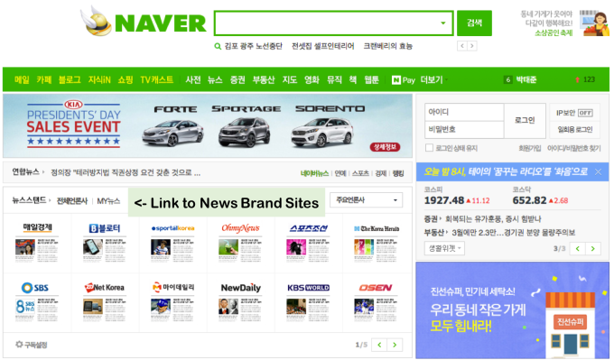

Let’s take the USA’s popular web designs as an example; right now, the most popular and widely used websites, such as Google, Amazon, Twitter, have relatively open and accessible layouts, with the most prominent features (videos, advertisements, search bars, etc.) displayed at the top of the page, and allowing the less popular information to fall to the bottom. American web designs often appear clean and elegant, and even if the pages themselves contain a lot of different information, it seems that designers strive to stay away from icons that could distract the user from the main content of the page or make it feel more cluttered.
On the other hand, in some Asian countries, like China and South Korea, the most popular websites are far more bold, bright, and in-your-face. Much of the content on sites like Daum and Naver that are popular in South Korea feature layouts where elements are packed tightly together, supplemented with gratuitous text, and often have animated elements or banners to attract the attention of the user. Similarly, sites like these like to play with bright pops of color and cutesy graphics, whereas sites in the USA like to keep a very selective color palette and keep pop-ups to a minimum. However, American websites also have quite a bit more freedom to play with typography than Asian sites do, as each character has to be legible and distinct, which is hard to achieve with lots of styling.
So, what do we take away from this, and what can we learn from different cultures about web development? Just as in linguistics, some concepts are borrowed, and there is some form of relativity between layouts. European countries and Russia have similar styles to the USA. Japan seems to either take after other Asian countries, or combine concepts to produce sites that are still bright and intense, but a bit less crowded. It seems most web designers have similar goals: to use graphics and color to make sure that the users see the most important information first, and to use these graphics to entice the user to come back to the site they’re using. The audience remains the most important factor; catering to those who will use your website through its language, accessibility, and style is incredibly important, and this remains a constant.